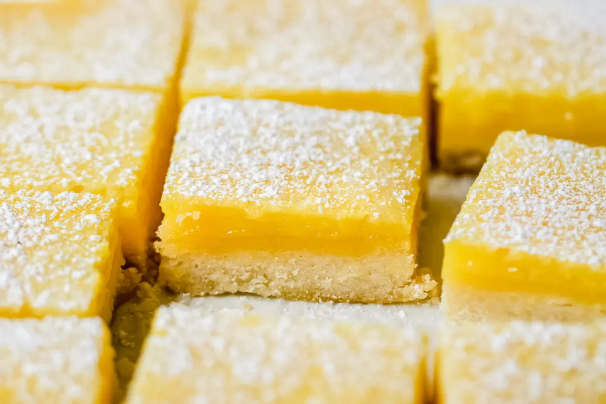

Lemon Squares Recipe

Description
Suffering from sweeth tooth cravings? Lemon squares are the perfect remedy!
Pair the fluffy creaminess of most pastries with the pop of citrus that lemons provide for an incredible dessert!
Ingredients
Crust
-
1/2 Cup
Chopped Cold Butter
-
4 tbsp
Icing Sugar
-
1 Cup
Flour
-
1/4 tbsp
Salt
Lemon Layer
-
1 Cup
Granulated Sugar
-
1/4 Cup
Flour
-
1 tbsp
Lemon Zest
-
3/4 Cup
Fresh Lemon Juice
-
4
Eggs
Steps
Crust
-
Preheat your oven to 170°C/340°F.
-
Line the bottom and edges of a square baking tin with baking paper.
-
Mix the sugar, flour, and salt in a bowl. Take the chopped butter and use your fingers to rub into the dry mixture until it forms a mass of sandy texture.
-
Press the dough into the bottom of the lined baking tin.
-
Prick the dough with a toothpick or a fork several times to prevent bubbles forming when baked.
-
Bake the crust until the edge is slightly golden (~20 minutes).
Lemon Layer
-
Mix the sugar and flour in a bowl.
-
Whisk in the lemon juice and eggs.
-
Empty this mixture into the lined tin with the pre-baked crust.
-
Bake the tin until the lemon layer no longer wobbles in the center (~23 minutes).
-
To check if the lemon layer still wobbles, lightly tap on the baking tin with a utensil.
-
Once baked, take the tin out of the oven and let cool for 1-2 hours at room temp.
-
Once cooled at room temperature, place in the refridgerator to cool for another hour.
Now your squares are ready to eat! Powder them with icing sugar and enjoy.